Branch A · Static carousels (all 12). No video this batch.
A · StaticF8Evening 1 · 7:15 PMqa passed
Checkout: beat mum to the beltتركتي العربية مليانة عند الكاشير، وطلعتي شايله طفلك وكل اللي في الطابور يتفرجوا عليكي؟
Low conveyor band: the checkout belt across the lower third; the full trolley left behind; a race of small vs big hands loading the belt. Ground: deep.
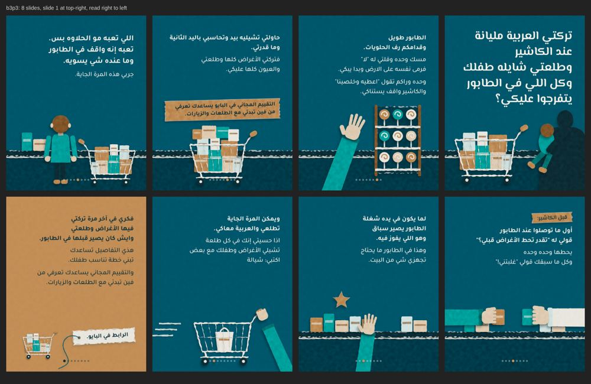
QA passed: verbatim PASS, no FAIL.
A · StaticF5Evening 1 · 8:15 PMqa passed
Mall hand dryer: 3 stepsغطيتي اذاني طفل اول ما اشتغلت نشافه اليدين في المول وطلعتي من الحمام بدون ما تنشفي يدينك.
Wall-tile grid macro: one big wall dryer with gold sound arcs; wet hands over small ears. Ground: night.
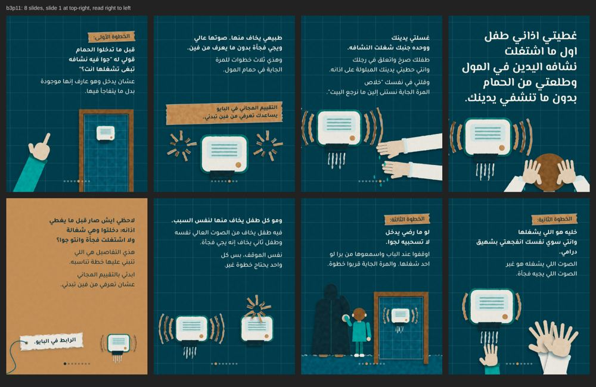
QA passed: verbatim PASS, no FAIL.
A · StaticF8Evening 2 · 7:15 PMqa passed
Sister's ملكة: the secret squeeze (practised days before)جلستي تجهزي ساعتين لملكة أختك، وفي النهاية طلعتي قبل العشا وهو يبكي على كتفك؟
Doorway glow: the majlis door pouring gold light into a dark corridor; the two-squeeze hands. Ground: deep.
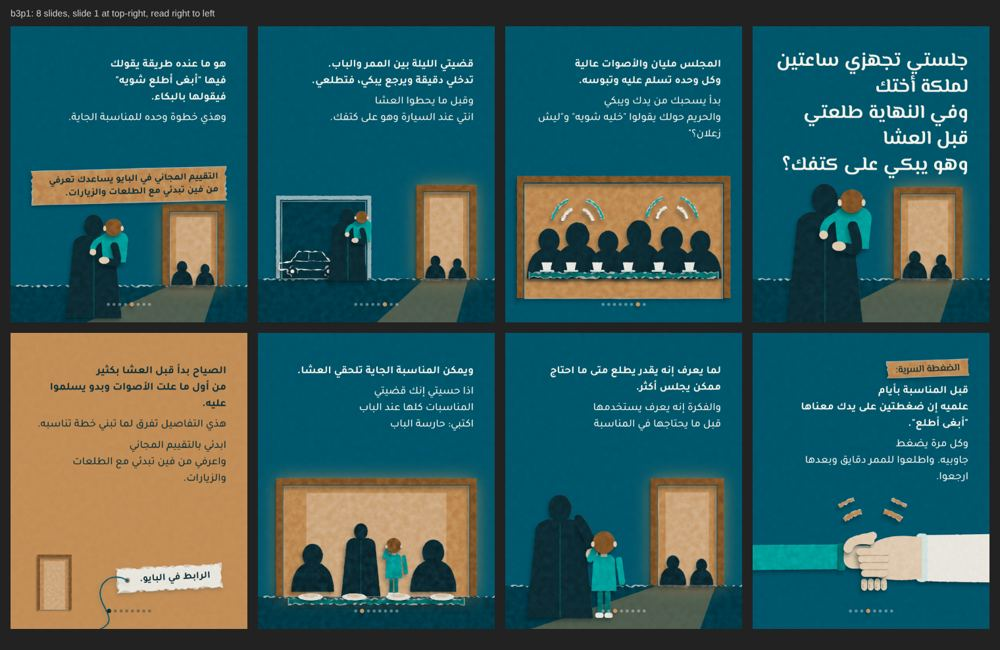
QA passed: verbatim PASS, no FAIL.
A · StaticF4Evening 2 · 8:15 PMqa passed
Broken biscuit: the cracked screenفتحتي الباكت كله تدوري له على بسكوتة مهي مكسوره، وأكلتي أنتي المكسور؟
Split pair: the cracked biscuit beside a phone with the same crack. Ground: night.
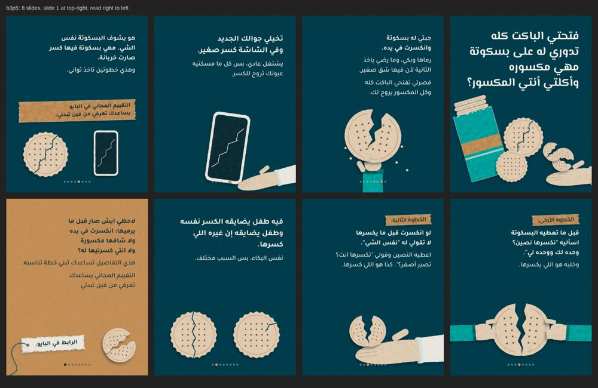
QA passed: verbatim PASS, no FAIL.
A · StaticF7 mistakesEvening 3 · 7:15 PMqa passed
Weekly جمعة: 3 things most people doرحتي جمعة أهلك عشان تجلسي معاهم، وقضيتيها كلها مع طفلك في الغرفة الثانية؟
Cut-away house: the big majlis next to the small side room. Ground: night.
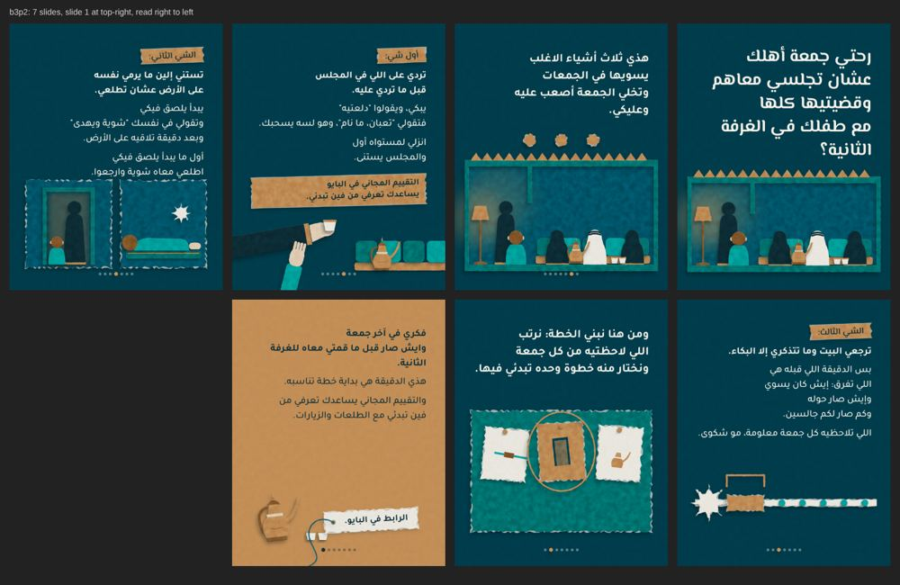
QA passed: verbatim PASS, no FAIL. Step tabs fixed in QA.
A · StaticF3Evening 3 · 8:15 PMqa passed
Winter jacket: two voices (dress together)صرتي تشيلي جاكيته في يدك طول الطلعة، وهو بردان ومو راضي يلبسه؟
Coat-hook rail: his jacket carried, then hung low beside your abaya. Ground: deep.
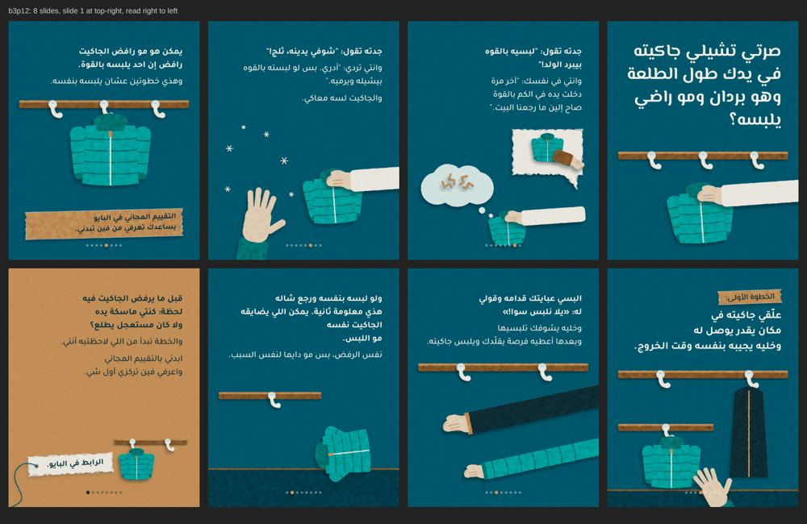
QA passed: verbatim PASS, no FAIL.
A · StaticF7 benefitsEvening 4 · 7:15 PMqa passed
Nails: cut yours in front of him firstما تقدري تقصي أظافره إلا وهو نايم وعلى فلاش الجوال؟
Torch cone: the phone flash cutting through the dark onto a small hand; then your own nail first. Ground: night (the «ما تقدري … إلا» test).
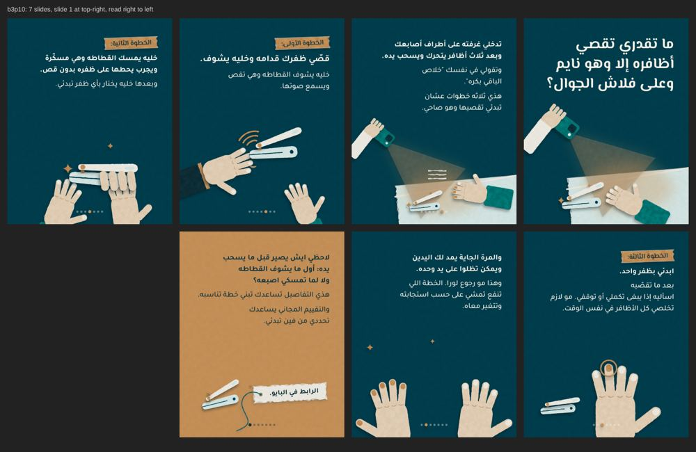
QA passed: verbatim PASS, no FAIL.
A · StaticF2Evening 4 · 8:15 PMqa passed
Sibling and the tower: build in a boxجلستي العصريه كلها على الأرض بينهم، وأول ما قمتي طاح برجه وبدأ الصراخ؟
Vertical stack hero: one tall block tower, then the box with raised edges. Ground: deep.
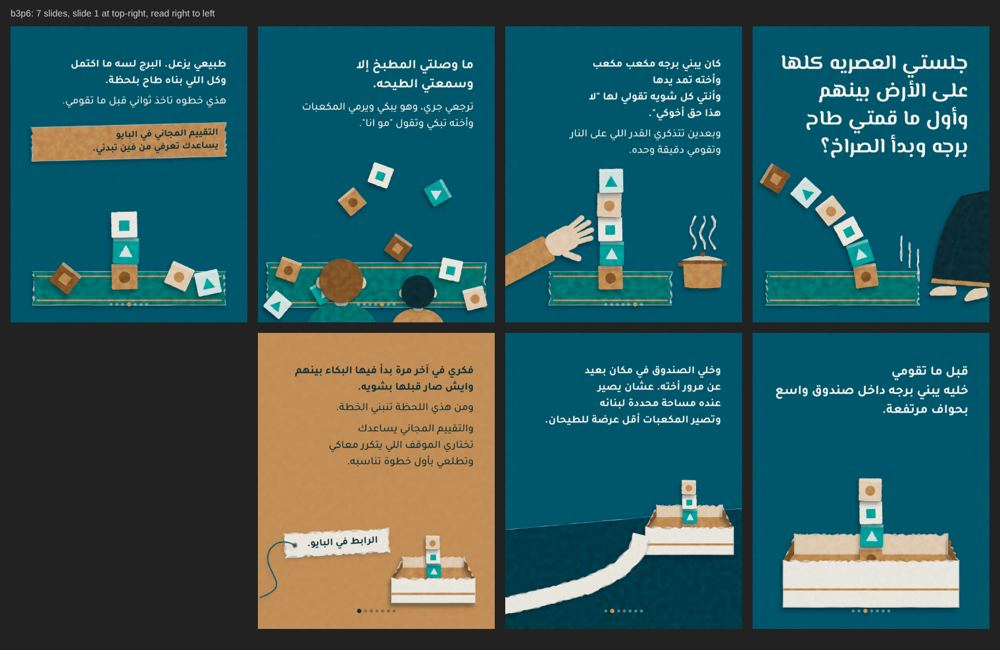
QA passed: verbatim PASS, no FAIL.
A · StaticF7 mistakesEvening 5 · 7:15 PMqa passed
The ride ends: 3 things most people doينزل من اللعبة وهو يبكي، فصرتي تطلعي من المول من باب ثاني؟
Kiddie ride on a tiled mall floor (no face, no headlight eyes). Ground: night.
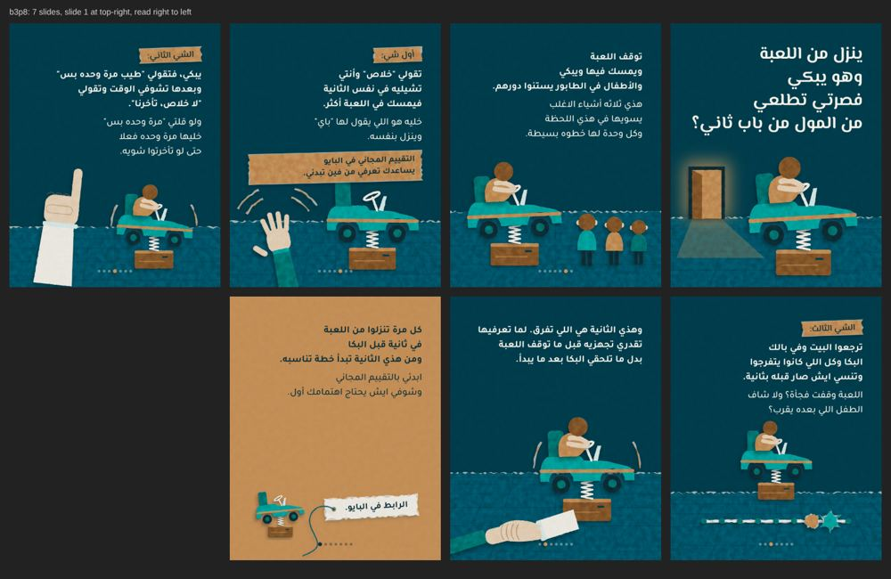
QA passed: verbatim PASS, no FAIL. Step tabs fixed in QA.
A · StaticF6Evening 5 · 8:15 PMqa passed
Hearing "no": prepare before and afterآخر مرة قلتي له "لا"، انتهى الموضوع ببكاء وبسكوتة في يده؟
High shelf: the packet on top of the wardrobe, a small hand reaching; then the prepared activity. Ground: deep.
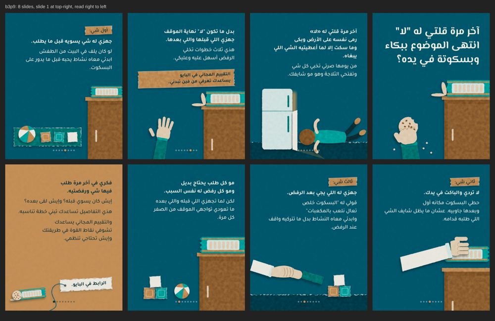
QA passed: verbatim PASS, no FAIL.
A · StaticF7 benefitsEvening 6 · 7:15 PMqa passed
Fast-food wait: his job at pickupقبل ما يوصل الأكل قلتي لهم خلوه سفري، وأكلتيه بارد في السيارة؟
Order screen of blank tiles (one glowing) + a curling receipt; no waiter. Ground: night.
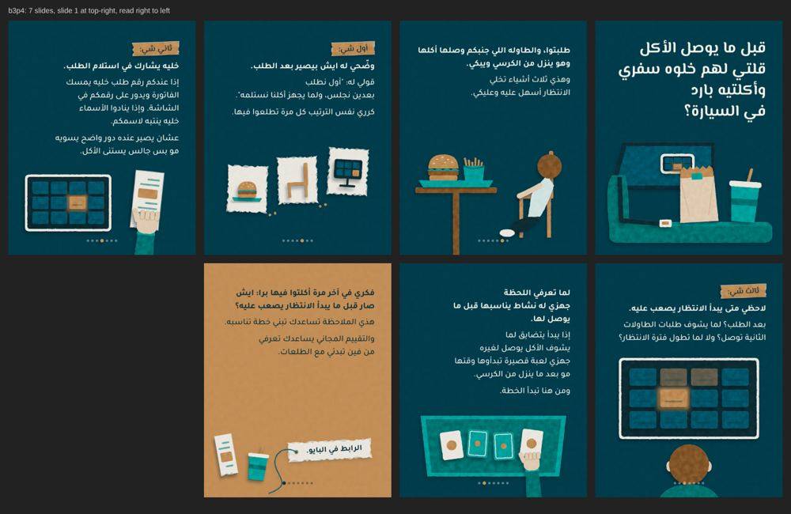
QA passed: verbatim PASS, no FAIL.
A · StaticF5Evening 6 · 8:15 PMqa passed
Losing a game: help him accept losingصار لك شهور تخسري لطفلك بعمد، ودحين أخته تسألك ليش دايما هو اللي يفوز؟
Fanned paper cards (no numbers), tossed, then stacked in a box. Ground: deep.
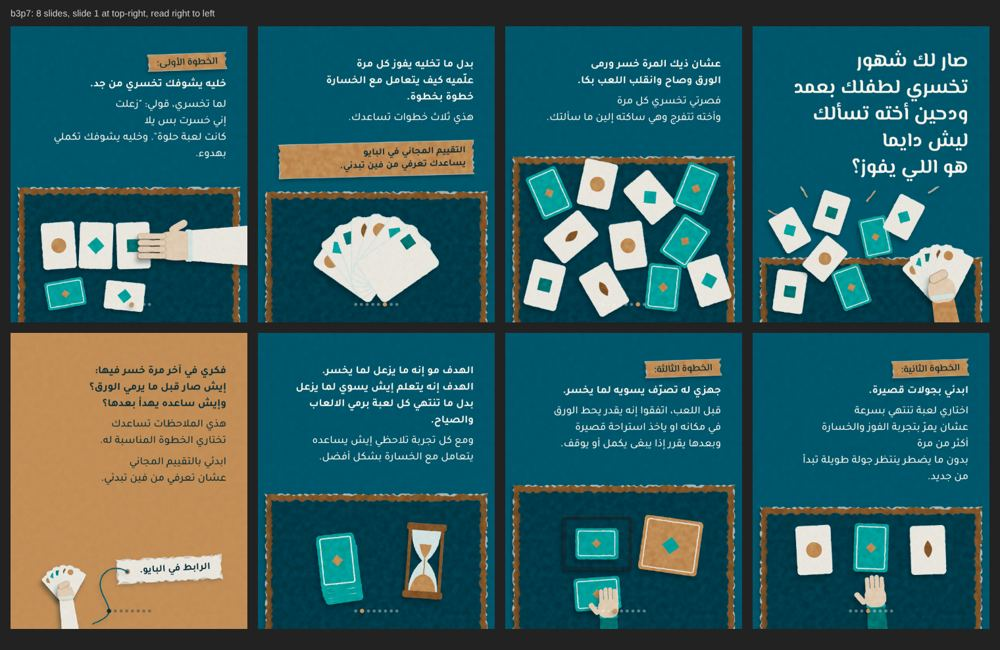
QA passed: verbatim PASS, no FAIL.